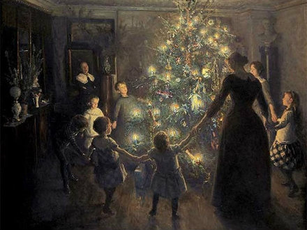
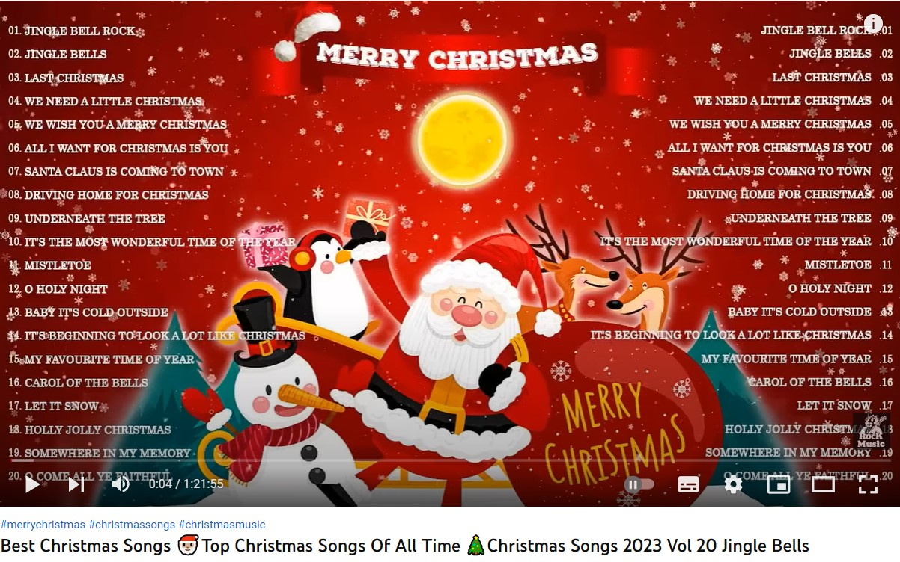
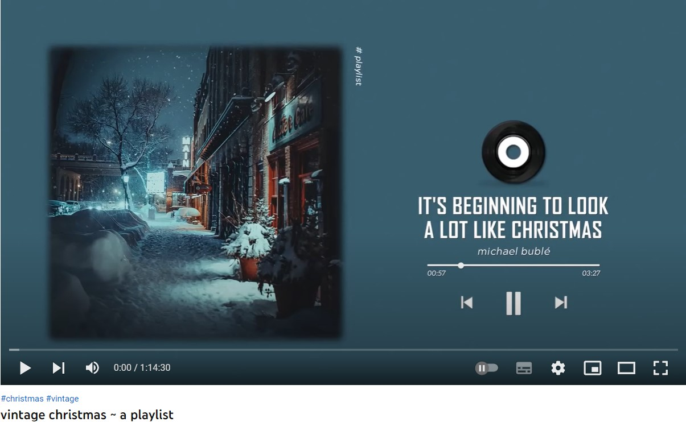
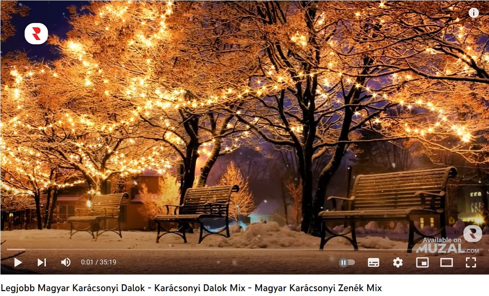

A története:

Karácsony a keresztények legfontosabb ünnepe, Jézus születésének az ünnepe. A betlehemi történet a Bibliában található, az Új Testamentum két könyvében,a Máté és Lukács evangéliumaiban. Majdnem kétezer évvel ezelőtt élt Izrael egyik kis városában, a galileai Názáretben, egy leány, Mária. Egy éjjel megjelent előtte Gábor arkangyal és bejelentette neki, hogy tervei vannak Istennek a Mária számára, ő lesz majd Isten Fiának az édesanyja. Mária megijedt, de az angyal megnyugtatta, hogy igaz, amit mond, és úgy helyes. Nemsokára férjhez ment Mária Józsefhez, és, amikor a király bejelentette, hogy vissza kell menni arra a helyre ahol születtek, mert népszámlálás lesz, együtt mentek a Jeruzsálemhez közeli Betlehembe.
Amikor megérkeztek késő este Betlehembe, Mária érezte, hogy eljött ideje, hogy megszülessen a gyermek, de már nem volt hely a számukra sehol. Végül is sikerült behúzódniuk egy istállóba és ott született meg a kis Jézus. Bölcső nem volt, helyette a jászolba fektették az újszülöttet.Egy közeli mezőn pásztorok legeltették a juhaikat és egy angyal jelent meg előttük mondván, hogy egy közeli istállóban megszületett az Isten Fia. Amikor a pásztorok ott találták a gyermeket a szüleivel, tudták, hogy az angyal igazat mondott.Három bölcs is tudta, hogy itt az ideje a Messiás megszületésének, és, amikor látták a csillagot a betlehemi istálló fölött, tudták, hogy az a jele annak, hogy ott is fogják megtalálni. Amint ott látták a kis Jézust Máriával és Józseffel, térdre borultak előttük és ajándékokkal halmozták el őket.
Szokások:
A regölés:A karácsonyt követő időszakhoz kapcsolódik a regölés szokása: az István napjától, december 26-tól Újévig járó regösök különféle énekeket adtak elő és jókívánságokat mondtak a ház lakóinak. A regölés lényegében természetvarázsló énekmondás, köszöntés - bőségvarázsló, párokat összeboronáló, adománygyűjtő szokás volt.
Advent:Az ünnep előtti negyedik vasárnap kezdődik és december 24-ig tart az Advent, ami egyben az egyházi év kezdetét is jelenti. Négy hete a Karácsonyra való előkészület időszaka. Újkeletű népszokás az adventi koszorú készítése: Karácsony közeledtével minden vasárnap eggyel több gyertyát kell meggyújtani. Az estéket egykor a gyertya mellett, adventi dalok éneklésével töltötte a család.
A karácsonyi asztal:A ma is továbbélő szokások szerint a karácsonyi asztal elképzelhetetlen hal, beigli, valamint dió és a család összetartását szimbolizáló kerek alma nélkül. Sok helyen vacsora után ma is annyi szeletre vágnak egy almát, ahányan ülnek az asztalnál, mondván: amilyen kerek az alma, olyan kerek, összetartó legyen a család a következő esztendőben.
Bónusz: Karácsonyi zenék:
|  |  |  |